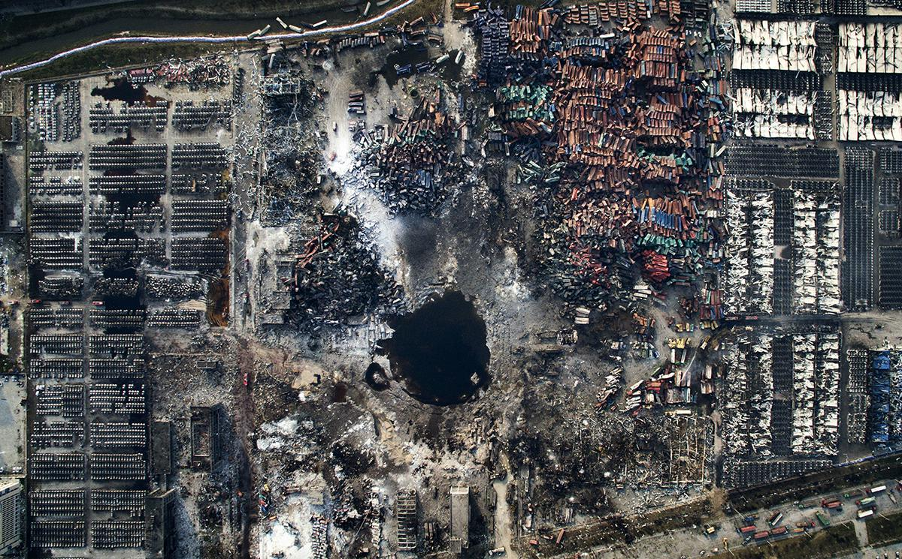

NekoKage
@_NekoKage
RT @zhu0588: 《天津大爆炸》是中国摄影师陈杰创作的新闻摄影作品，记录了2015年天津港危险品仓库爆炸事件的核心现场。该作品通过无人机航拍，展现了爆炸后的全景画面，因其对事件真相的揭示和专业的拍摄手法，获得第59届世界新闻摄影比赛（荷赛）一般新闻类单幅三等奖。 htt…

朱韵和
@zhu0588
《天津大爆炸》是中国摄影师陈杰创作的新闻摄影作品，记录了2015年天津港危险品仓库爆炸事件的核心现场。该作品通过无人机航拍，展现了爆炸后的全景画面，因其对事件真相的揭示和专业的拍摄手法，获得第59届世界新闻摄影比赛（荷赛）一般新闻类单幅三等奖。 https://t.co/YHjlPVoTYn